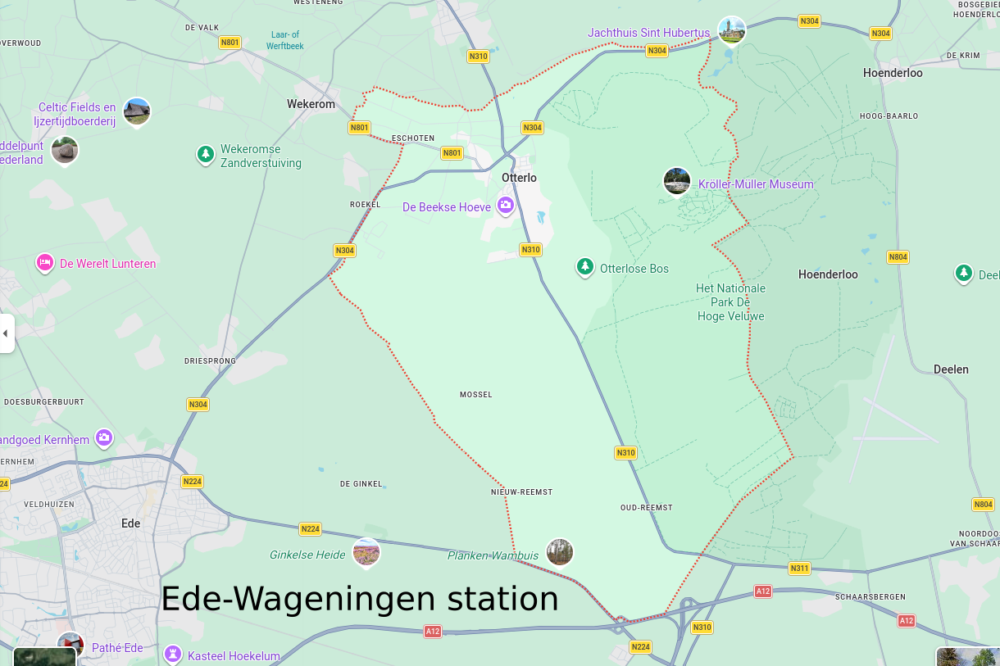

Je suis allé à Otterlo pour découvrir une partie de l’œuvre de Vincent van Gogh et ce que j’y ai découvert, c’est l’œuvre d’Hélène kröller-Müller.
Aux Pays-Bas, à deux heures d’Amsterdam, par les transports en commun , Otterlo est un petit village paisible situé au cœur de la Veluwe, vaste région naturelle. Pourtant, derrière ses paysages de forêts, de landes et de dunes de sable, se cache l’un des projets culturels les plus ambitieux du début du XXᵉ siècle : créer un véritable paradis terrestre où l’art et la nature sont accessibles à tous, le rêve d’Hélène Kröller-Müller.

Née en Allemagne en 1869, Hélène Kröller-Müller épouse Anton Kröller en 1888. À la tête d’un important groupe commercial et industriel, Anton fournit les moyens financiers qui permettront à son épouse de constituer une collection d’art exceptionnelle et d’acquérir de vastes terrains dans la Veluwe. Si Hélène est la visionnaire du projet, Anton en est le partenaire indispensable, convaincu lui aussi que richesse matérielle et enrichissement spirituel se rejoingne dans une œuvre commune.

À partir de 1909, le critique d’art et pédagogue H.P. Bremmer devient le conseiller et mentor d’Hélène. C’est notamment sous son influence qu’elle découvre l’œuvre de Vincent van Gogh, dont elle perçoit très tôt la portée révolutionnaire. Ensemble, ils acquièrent peintures, dessins et lettres de l’artiste à une époque où sa renommée est encore loin d’être universelle. Grâce à cette intuition exceptionnelle, le musée conserve aujourd’hui la deuxième plus importante collection de Van Gogh au monde après celle du Musée Van Gogh d’Amsterdam. Cette collection unique permet de suivre l’évolution artistique du peintre à travers toutes les périodes majeures de sa création.
Mais l’ambition d’Hélène dépasse largement la simple constitution d’une collection. Son projet consiste à créer un lieu où les œuvres seraient découvertes dans un environnement naturel préservé, loin de l’agitation des grandes villes. Pour cela, Hélène et Anton acquierent progressivement plus de cinq mille hectares de terres qui formeront le noyau de l’actuel Parc national De Hoge Veluwe.

Ce parc est aujourd’hui l’un des aspects les plus singuliers de l’expérience Kröller-Müller. Ici, les voitures sont rares. Les visiteurs parcourent le domaine à pied, en autobus ou, plus emblématiquement encore, grâce aux célèbres bicyclettes blanches incluses dans le droit d’entrée du parc. Le vélo devient alors bien plus qu’un moyen de transport : il fait partie intégrante de la visite. On traverse les forêts de pins, les étendues de bruyères et les dunes de sable au rythme du pédalage, dans un silence seulement interrompu par le chant des oiseaux ou le bruissement du vent.

L’atmosphère qui règne dans le parc contraste fortement avec celle des grands musées des capitales mondiales. Ici, point de longues files d’attente sur des trottoirs encombrés ni de visiteurs en tenue de ville venus cocher une étape culturelle. On croise des familles à vélo, des promeneurs équipés de chaussures de marche, des joggeurs profitant des sentiers forestiers, des cyclistes portant casque et vêtements de sport. Certains arrivent directement du parc, les joues rougies par l’effort ou par le vent, avant d’entrer dans les salles du musée. L’art y apparaît comme une prolongation naturelle de la promenade plutôt qu’une activité séparée du quotidien.

Cette vision originale se retrouve dans l’architecture du domaine. Pour lui donner forme, Hélène et Anton font appel à l’architecte belge Henry van de Velde, l’une des grandes figures de l’Art nouveau et du modernisme européen. Dès 1915, celui-ci imagine un vaste complexe muséal destiné à devenir le cœur du domaine. Les bouleversements économiques du début du siècle empêcheront la réalisation complète du projet initial mais Van de Velde demeure l’artisan principal de l’ensemble.
Finalement, le musée inauguré en 1938, se distingue par son élégance sobre et sa parfaite intégration dans le paysage. L’architecture accompagne les œuvres sans les dominer, dans une harmonie avec la lumière et la nature environnante.

Cette harmonie atteint son apogée dans la résidence de campagne Saint Hubertus, également dessinée par Henry van de Velde. Construite entre 1915 et 1920, elle constitue l’un des joyaux architecturaux des Pays-Bas. Dominant les paysages de la Veluwe, elle symbolise l’idéal poursuivi par le couple : l’art, l’architecture et la nature les composantes d’un même univers.

Touchés par les difficultés financières de la fin des années 1920, Hélène et Anton choisissent de transmettre leur collection et leur domaine à l’État néerlandais afin d’en garantir la préservation. Ce geste permet de réaliser pleinement le rêve qui les animait depuis des décennies : partager avec le plus large public un patrimoine exceptionnel habituellement réservé à quelques privilégiés.

Aujourd’hui, le Musée Kröller-Müller demeure l’une des institutions culturelles les plus originales d’Europe. Ses collections réunissent Van Gogh, Seurat, Picasso, Mondrian, Léger et d’autres maîtres de l’art moderne.
Après la visite des salles d’exposition du musée, le visiteur quitte l’air-conditionné et pénètre dans le jardin de sculptures, étendu sur 25 hectares, le plus grand d’Europe. Il a l’impression de visiter un second musée, celui-ci à ciel ouvert. Il découvre des œuvres d’Auguste Rodin, Marta Pan (1923-2008), Henry Moore, Barbara Hepworth, Jean Dubuffet ou Claes Oldenburg dans un dialogue permanent avec les arbres, les rhododendrons, les clairières et les paysages.

À Otterlo, la visite d’un musée ne commence pas au seuil d’un bâtiment. Elle débute dès l’entrée dans le parc, au guidon d’une bicyclette blanche ou au détour d’un sentier forestier. C’est sans doute là que réside l’héritage le plus précieux d’Hélène Kröller-Müller : l’art peut être vécu comme une respiration, une promenade et une rencontre avec la nature. Plus qu’un musée, elle a créé un monde où la culture s’épanouit à ciel ouvert, dans ce qui demeure l’une des plus belles incarnations européennes du rêve d’un paradis terrestre. L’œuvre d’Hélène Kröller-Müller dépasse largement le cadre d’une collection d’art : elle a imaginé une véritable philosophie du lien entre l’être humain, la nature et la création artistique. À une époque où les grands musées se concentraient dans les capitales et les centres urbains, elle choisit délibérément la forêt, les landes et le silence de la Veluwe. Le visiteur n’est pas conduit directement devant les chefs-d’œuvre : il les mérite. La traversée du paysage et la contemplation de la nature font partie intégrante de l’expérience esthétique. À Otterlo, l’art ne se visite pas seulement : il se rejoint. Entre deux coups de pédale, au détour d’un chemin bordé de bruyères ou dans le silence d’une clairière, le visiteur découvre que le véritable chef-d’œuvre imaginé par Hélène Kröller-Müller n’est peut-être ni un tableau de Van Gogh ni une sculpture monumentale, mais l’harmonie qu’elle a su créer entre l’art, l’architecture et la nature.

Otterlo (en vieux néerlandais : Otterloo) est un village néerlandais situé dans la commune d’Ede, en province de Gueldre dont la capitale est Arnhem, au nord-ouest du parc national De Hoge Veluwe. Au 1er janvier 2021, Otterlo comptait 2 215 habitants pour une superficie de 103,9 km2.
Entre 1812 et 1818, Otterlo constituait une commune indépendante. Aujourd’hui, elle comprend une partie de la Veluwe incluse dans le parc national.
Le musée Kröller-Müller site web, fondé en l’honneur du couple de collectionneurs d’art Anton et Hélène Kröller-Müller[1], se trouve à proximité immédiate de la localité et possède une importante collection de tableaux de Vincent van Gogh.

Le musée Kröller-Müller dispose notamment de la deuxième collection mondiale de tableaux de Vincent van Gogh après celle du musée Van Gogh d’Amsterdam, avec 180 dessins et 92 toiles, telles que Terrasse du café le soir, Portrait de Paul-Eugène Milliet ou Vergers fleurissants. D’autres artistes majeurs de la génération de Van Gogh et de l’avant-garde du début du XXe siècle sont aussi représentés comme Georges Seurat avec la plus importante collection au monde (hors esquisses), Piet Mondrian, Paul Gauguin, Odilon Redon, James Ensor, Georges Braque, Picasso, Juan Gris, Wassily Kandinsky, Fernand Léger, etc. ## Le Voyage ### Mardi 19 En voiture, je quitte Saint-Molf vers 11h, en oubliant l’essentiel : smartphone, portefeuille et porte-monnaie ! Bravo Régis ! J’ai été bon d’un aller retour supplémentaire (Saint-Molf-Guérande) pour réparer ma faute.
Lors de l’achat de nos billets d’avion j’avais demandé une assistance, pourtant à notre arrivée à l’aéroport d’Amsterdam, l’hôtesse de l’air m’a indiqué que nous n’étions pas sur la liste. Mais notre problème a été vite résolu, nous avons été véhiculé jusqu’au hall de récupération des bagages, puis Gwenola a terminé le parcours en fauteuil roulant jusqu’à la gare ferroviaire. Où nous avons remercié chaleureusement l’employé et nous prenons notre train en direction d’Ede.
Je visite seul le parc national et le musée Kroller Muller. C’est un émerveillement. Parmi les 93 tableaux de Vincent, la majorité ont été récemment re-encadrés. Vincent attachait beaucoup d’importance à la qualité des cadres. De nos jours, la majorité d’entre-eux sont en plâtre recouvert de dorure, principalement, ceux de nos musées nationaux. Vincent, dans l’une de ses lettres à Théo, préconisait des cadres simples en bois. En ce sens, je ne peux que féliciter les conservateurs du musée Kroller Muller pour avoir finalement opter pour cette simplicité. #### Le musée Kröller Müller

Le bâtiment d’origine en briques, conçu par Henry van de Velde, est à peine assez grand pour abriter la collection de peintures d’Hélène Kröller Müller. Bram Hammacher, directeur du musée Kröller Müller de 1947 à 1963, réalise une première extension en 1954 : un auditorium pour les conférences et les concerts, ainsi qu’une galerie de sculptures dotée de hautes fenêtres offrant une vue imprenable sur la nature environnante. Les sculptures de Jean Arp, Ossip Zadkine, Aristide Maillol et Auguste Rodin, puis plus tard celles de Barbara Hepworth et Mariono Marini, y occupent une place de choix.
Cliquer sur le lien pour en savoir plus sur l’histoire du musée Kröller Müller
Le texte écrit en anglais, traduit en français à l’aide de Google traduction a été enrichi de liens hypertextes par Régis Leruste. La photo est accessible par le lien Historique du musée Kröller Müller
Les textes ci-dessous proviennent du site Internet du musée Kröller-Müller et sont également traduit en français à l’aide de Google traduction :
a) Architecture d’hier et d’aujourd’hui
Le musée Kröller-Müller est l’œuvre de toute une vie pour Hélène Kröller-Müller. Entre 1907 et 1922, avec son époux Anton Kröller, elle constitue la collection de près de 11 500 œuvres d’art : l’une des plus importantes collections privées du XXe siècle. Hélène rêve d’une « maison-musée », un lieu où elle pourrait partager sa passion pour l’art avec tous. Lorsque le musée Kröller-Müller ouvre ses portes en 1938, son rêve devient réalité. Sous ses successeurs, le musée s’agrandit avec de nouveaux bâtiments et un vaste jardin de sculptures.
Le « Musée Kröller » à La Haye
Dès 1913, Hélène Kröller-Müller expose sa collection d’art sur la Lange Voorhout à La Haye. La collection est visible sur rendez-vous. Initialement, l’emplacement prévu pour sa « maison-musée » de rêve est le domaine d’Ellenwoude à Wassenaar, près de La Haye, acquise par Hélène et son mari Anton 1911. Les Kröller collaborent avec les architectes Peter Behrens et Ludwig Mies (qui prendra plus tard le nom de Mies van der Rohe), mais finalement, Hélène choisit Berlage, sur les conseils de H.P. Bremmer.
Berlage et Van de Velde sur la Veluwe
Hélène décide qu’elle préfère construire son musée sur la Veluwe, au cœur de la nature. Il se doit d’être un musée grandiose et, en 1918, Berlage présente ses esquisses pour un bâtiment gigantesque comprenant des espaces de vie et d’exposition. Cependant, les relations entre Hélène et Berlage se détériorent et le projet est abandonné. Le successeur de Berlage est l’architecte belge Henry van de Velde, concepteur du musée Folkwang et professeur du précurseur Bauhaus. Les plans qu’il présente à l’automne 1920, également pour un immense musée, sont accueillis avec enthousiasme et la construction débute en 1921. Cependant, après seulement six mois, Müller & Co rencontre des difficultés financières et les travaux sont interrompus.
Le « musée de transition » d’Henry Van de Velde
Afin de préserver l’immense collection d’art, celle-ci est placée dans une fondation en 1928, puis léguée à l’État néerlandais en 1935. Henry van de Velde est chargé de concevoir un musée beaucoup plus modeste, qui ouvre ses portes en 1938 et suscite un vif intérêt national et international, grâce à la beauté de sa collection, l’élégance de son bâtiment et son emplacement exceptionnel. Hélène, qui rêve encore de son « grand musée », s’obstine à le qualifier de « musée de transition ». Pourtant, le nouveau musée correspond à ses souhaits : des espaces intimes et chaleureux, une douce lumière zénithale, une « maison-musée », comme elle l’appelle, où les visiteurs peuvent s’approcher au plus près des œuvres. Le bâtiment, en briques, est presque entièrement clos afin de maximiser la surface murale consacrée aux nombreuses peintures.
Extension avec une galerie de sculptures
Beeldenzaal, Van de Velde. Après le décès d’Hélène en 1939 et la fin de la Seconde Guerre mondiale, Bram Hammacher prend la direction du musée Kröller-Müller. Il introduit la sculpture au sein du musée, en complément de la collection de peintures d’Hélène. Le musée est agrandi avec une galerie de sculptures et un auditorium, également conçus par Van de Velde. Contrastant avec le caractère fermé du reste du bâtiment, la galerie de sculptures possède des murs entièrement vitrés offrant une vue panoramique sur les bois environnants.
Inauguration du jardin de sculptures
Suite à la réalisation de la galerie de sculptures, le projet d’un jardin de sculptures est lancé. En étroite collaboration avec Hammacher, l’architecte paysagiste Jan Bijhouwer conçoit un jardin de sculptures labyrinthique où nature et sculpture sont considérées comme égales, un concept novateur pour l’époque. Le jardin de sculptures ouvre ses portes en 1961 avec des œuvres d’Auguste Rodin, Marta Pan et Henry Moore, entre autres. Dès lors, le musée Kröller-Müller s’impose comme l’un des plus importants musées internationaux de sculpture moderne.
“b) 100 years of Van Gogh” appartenant à la rubrique A museum of international allure du site internet du musée Kröller Müller.
En 1953, en collaboration avec le Gemeentemuseum de La Haye et le Stedelijk Museum d’Amsterdam, une importante exposition commémorative est organisée pour célébrer le centenaire de la naissance de Vincent van Gogh. Elle rassemble la quasi-totalité de l’œuvre de l’artiste : toutes les œuvres de la « collection de Mme Kröller », ainsi que l’ancienne collection de Theo et Jo Van Gogh-Bonger, désormais propriété de leur fils Vincent Willem van Gogh, et quelques prêts internationaux. Otterlo est le premier des trois lieux d’exposition. L’inauguration a lieu en présence de la reine Juliana.
La seconde exposition organisée dans le cadre de l’année commémorative Van Gogh est probablement une idée de Jan Hendrik Reinink, secrétaire général du ministère de l’Éducation, des Arts et des Sciences. « Franse tijdgenoten van Vincent van Gogh » (Contemporains français de Vincent van Gogh) présente des œuvres d’art créées entre 1881 et 1890 par l’avant-garde de l’époque et que Van Gogh a pu voir de son vivant.
Après cette exposition, Vincent Willem van Gogh prête la collection de ses parents au musée. Dans « De verzameling van Theo van Gogh » (La collection de Théo van Gogh), sont présentées des œuvres d’artistes tels que Breitner, Daumier, Corot, Gauguin, Israëls, Manet, Millet, Monticelli, Pissarro et Toulouse-Lautrec. Grâce notamment aux efforts du ministère de l’Éducation, des Arts et des Sciences, cette exposition Van Gogh est également présentée à Saint-Louis, Philadelphie et Toledo (Ohio). Plus de 150 000 visiteurs découvrent l’œuvre de Van Gogh à Saint-Louis seulement. ### ### Jeudi 21 Aujourd’hui, Gwenola m’accompagne. Notre attention se porte sur une présentation inscrite à même le mur qui explicite les différentes phases d’acquisition par Hélène Müller des tableaux. Soigneusement constituée, elle indique chronologiquement pour chaque groupe de tableaux acquis, le nom du galieriste, le lieu de vente et pour chaque tableau, son coût d’acquisition. ### Vendredi 22 J’apprends que le tableau de Vincent “Le café de nuit” est parti au Japon jusqu’au mois de septembre. Je regarde les autres : * Four Sunflowers gone to seed * Portrait de Joseph Roulin * Still life with the plate of onions * Path in the Park * The Green wineyard * Pont de Langlois * La berceuse (portrait de madame Roullin) * Les mangeurs de pommes de terre * At éternity gate Dans une autre salle, je regarde : * Marlow Moss - Composition in white yelow, blue and black, with black lines Par ailleurs, j’ai photographie la présentation des acquisitions d’Hélène MÜller.
Pour terminer la journée : Immersion dans le jardin des sculptures.
Arnhem open air museum Reconstitution d’un village néerlandais au 19eme siècle. Un circuit de tramway encercle le village. Dès l’entrée, nous l’empruntons et nous en descendons à l’arrêt Dorp (village en néerlandais). La gare abrite, sur des voies adjacentes, une collection de tramways, tous beaux et en très bon état. Nous abordons le village, sa forge, puis ses commerces, boulangerie pâtisserie, glacier et “Poffertjes”, spécialité néerlandaise que nous dégustons. Il s’agit d’un beignet en forme de coquillage cuisiné dans une poêle en fonte multi-alvéolee, servit avec du beurre et saupoudré de sucre parfumé à la cannelle. Nous visitons la maison d’un riche marchand : son bureau où il recevait ses clients, deux salles à manger en enfilade, un jardin coquet, les pièces d’intendance et un atelier de tisserand. ### Dimanche 24 Visite du parc d’Otterlo. Sous un soleil estival, nous empruntons chacun un vélo blanc pour rejoindre la résidence de campagne d’Hélène et Anton Kröller-Müller. La maison est visitable mais il aurait fallu faire une réservation préalable sur Internet.
{kind=link}